There is No Place for "WORLD PEACE" in this world.YES We All Know How World Was Effected and Effecting with corona virus.
Following are some Reasons of No peace in this worldThe COVID-19 pandemic has led to a dramatic loss of human life worldwide and presents an unprecedented challenge to public health, food systems and the world of work. The economic and social disruption caused by the pandemic is devastating: tens of millions of people are at risk of falling into extreme poverty, while the number of undernourished people, currently estimated at nearly 690 million, could increase by up to 132 million by the end of the year.
Millions of enterprises face an existential threat. Nearly half of the world’s 3.3 billion global workforce are at risk of losing their livelihoods. Informal economy workers are particularly vulnerable because the majority lack social protection and access to quality health care and have lost access to productive assets. Without the means to earn an income during lockdown, many are unable to feed themselves and their families. For most, no income means no food, or, at best, less food and less nutritious food.
Millions of agricultural workers – waged and self-employed – while feeding the world, regularly face high levels of working poverty, malnutrition and poor health, and suffer from a lack of safety and labour protection as well as other types of abuse. With low and irregular incomes and a lack of social support, many of them are spurred to continue working, often in unsafe conditions, thus exposing themselves and their families to additional risks. Further, when experiencing income losses, they may resort to negative coping strategies, such as distress sale of assets, predatory loans or child labour. Migrant agricultural workers are particularly vulnerable, because they face risks in their transport, working and living conditions and struggle to access support measures put in place by governments. Guaranteeing the safety and health of all agri-food workers – from primary producers to those involved in food processing, transport and retail, including street food vendors – as well as better incomes and protection, will be critical to saving lives and protecting public health, people’s livelihoods and food security.
In the COVID-19 crisis food security, public health, and employment and labour issues, in particular workers’ health and safety, converge. Adhering to workplace safety and health practices and ensuring access to decent work and the protection of labour rights in all industries will be crucial in addressing the human dimension of the crisis. Immediate and purposeful action to save lives and livelihoods should include extending social protection towards universal health coverage and income support for those most affected. These include workers in the informal economy and in poorly protected and low-paid jobs, including youth, older workers, and migrants. Particular attention must be paid to the situation of women, who are over-represented in low-paid jobs and care roles. Different forms of support are key, including cash transfers, child allowances and healthy school meals, shelter and food relief initiatives, support for employment retention and recovery, and financial relief for businesses, including micro, small and medium-sized enterprises. In designing and implementing such measures it is essential that governments work closely with employers and workers.
Countries dealing with existing humanitarian crises or emergencies are particularly exposed to the effects of COVID-19. Responding swiftly to the pandemic, while ensuring that humanitarian and recovery assistance reaches those most in need, is critical. We must rethink the future of our environment and tackle climate change and environmental degradation with ambition and urgency. Only then can we protect the health, livelihoods, food security and nutrition of all people, and ensure that our ‘new normal’ is a better one.Extreme poverty is increasingly concentrated in sub-Saharan Africa. About 40% of the region’s people live on less than $1.90 a day. Extreme poverty rates nearly doubled in the Middle East and North Africa between 2015 and 2018, from 3.8% to 7.2%, mostly because of crises in Syria and Yemen. Although countries impacted by fragility, crises, and violence are home to about 10% of the world’s population, they account for more than 40% of people living in extreme poverty. By 2030, an estimated 67% of the world’s poor will live in fragile contexts. About 70% of people older than 15 who live in extreme poverty have no schooling or only some basic education. 1.3 billion people in 107 developing countries, which account for 22% of the world’s population, live in multidimensional poverty. 644 million children are experiencing multidimensional poverty. 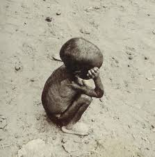 How many people live in poverty in the world? Recent estimates for global poverty are that 9.2% of the world, or 689 million people, live in extreme poverty on $1.90 or less a day, according to the World Bank. In the United States, 11.8% of the population or 38.1 million people, live in poverty — with an income of less than $33.26 per day — according to the 2018 census. These numbers are calculated based on income and a person’s ability to meet basic needs. However, when looking beyond income to people experiencing deprivation in health, education, and living standards, 1.3 billion people in 107 developing countries are multidimensionally poor, according to a 2020 report by the U.N. Development Program. 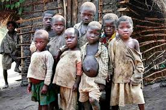 How can I help end global poverty Learn more about World Vision’s work to eradicate global poverty. Pray with us for World Vision’s work around the world using Matthew 25 prayer guides. Give to bring lasting change around the world by delivering life-saving help where it’s needed most. Sponsor a child to help provide access to essentials such as clean water, healthcare, economic opportunity, and education. For $39 a month, you’ll help that child and their community to stand tall, free from poverty. 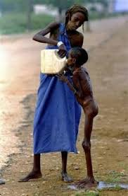 poverty Although poverty is often discussed in terms of dollar amounts, quality of life is also part of the conversation. Living in poverty means a life of struggle and deprivation. Children living in poverty often lack access to quality education. Sometimes it’s because there are not enough quality schools, their parents cannot afford school fees, or because impoverished families need their children to work. Without a quality education, children grow up being unable to provide for their own children — thus the generational cycle of poverty. Living in poverty also means not being able to afford a doctor or medical treatment. It means no electricity, limited shelter, and often little to no food on the table. For young children, improper nutrition can mean stunting and wasting that permanently impact their development. In impoverished countries where many people lack access to clean water and sanitation, poverty means the spread of preventable diseases and the unnecessary death of children. Historically, poverty has been calculated based on a person’s income and how much he or she can buy with that income, but new multidimensional measures are more holistic.
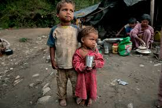 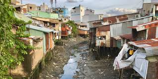 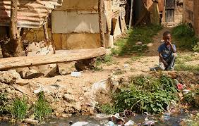 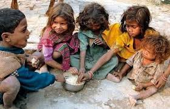The main purpose of deforestation is to increase the land area. Also, this land area is to set up new industries. And, this all is because of the increase in population. As the population increases the demand for products also increase. So rich businessmen set up these industries to increase profit. Harmful Effects of Deforestation There are many harmful effects of deforestation. Some of them are below: Soil erosion: Soil erosion is the elimination of the upper layer of the soil. It takes place when there is removing of trees that bind the soil. As a result wind and water carries away the top layer of the soil. Moreover, disasters like landslides take place because of this. Furthermore, soil erosion is responsible for various floods. As trees are not present to stop the waters from heavy rainfall’s gush directly to the plains. This results in damaging of colonies where people are living. Global Warming:Global warming is the main cause of the change in our environment. These seasons are now getting delayed. Moreover, there is an imbalance in their ratios. The temperatures are reaching its extreme points. This year it was 50 degrees in the plains, which is most of all. Furthermore, the glaciers in the Himalayan ranges are melting. As a result, floods are affecting the hilly regions of our country and the people living there. Moreover, the ratio of water suitable for drinking is also decreasing. Impact on the water cycle: Since through transpiration, trees release soil water into the environment. Thus cutting of them is decreasing the rate of water in the atmosphere. So clouds are not getting formed. As a result, the agricultural grounds are not receiving proper rainfall. Therefore it is indirectly affecting humans only. A great threat to wildlife Deforestation is affecting wildlife as well. Many animals like Dodo, Sabre-toothed Cat, Tasmanian Tiger are already extinct. Furthermore, some animals are on the verge of extinction. That’s because they have lost habitat or their place of living. This is one of the major issues for wildlife protectors. deforestation harmful to our environment: Deforestation is harmful to our environment because it is creating different problems. These problems are soil erosion, global warming. Moreover, it is also causing different disasters like floods and landslides. animals affected by deforestation
Deforestation affects animals as they have lost their habitat. Moreover, herbivores animals get their food from plants and trees. As a result, they are not getting proper food to eat, which in turn is resulting in their extinction
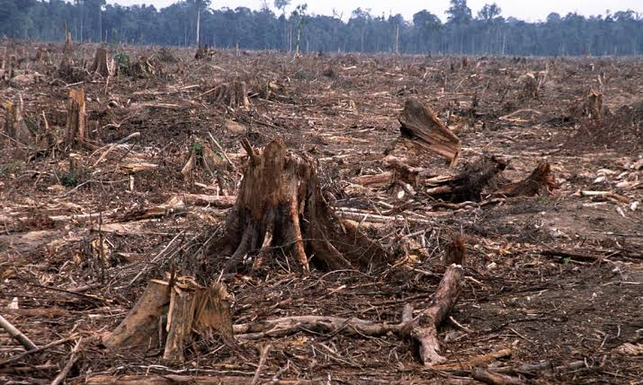 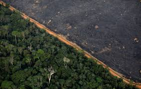 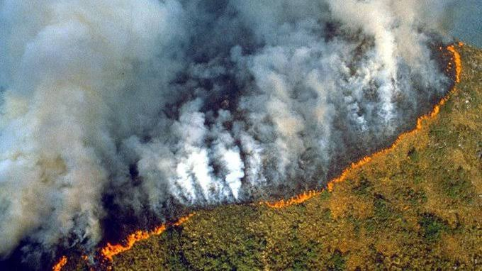 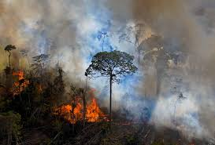 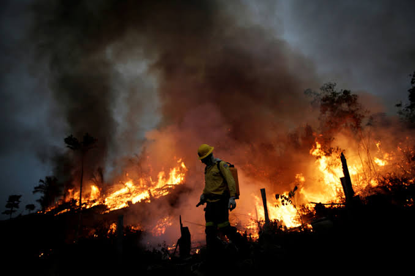 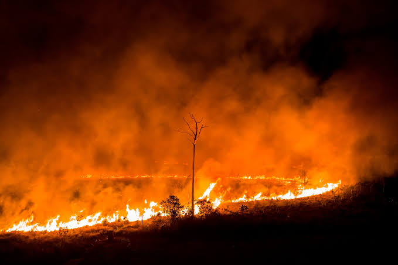